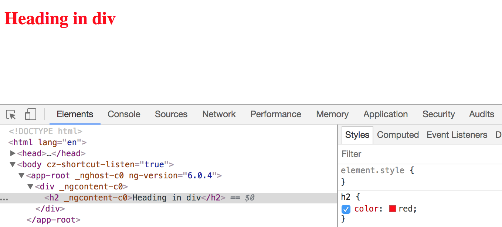
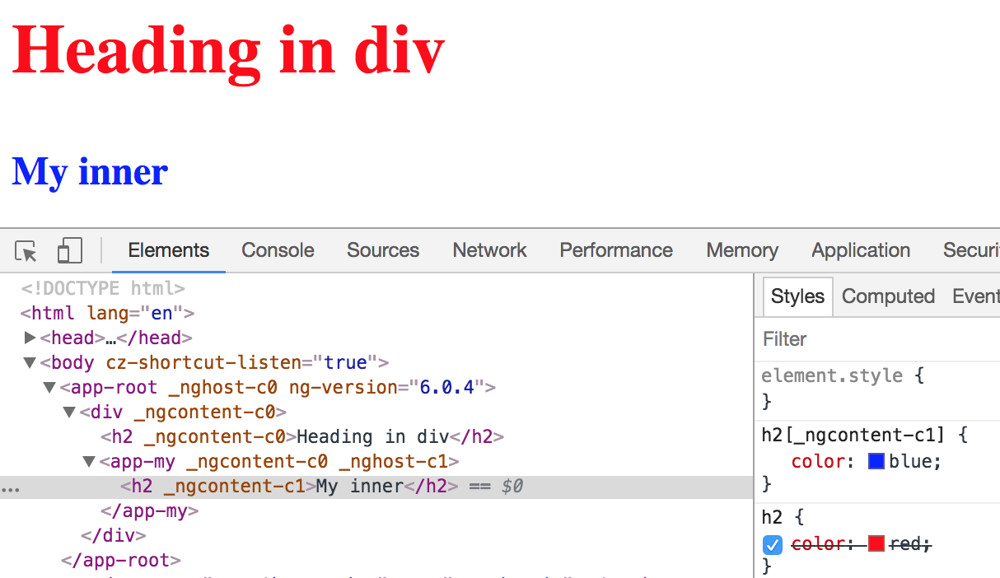

DOM today
- single DOM tree in the browser
- all JS and CSS works againstthe entire tree
- no encapsulation, only with hacks
Shadow DOM
- DOM that is isolated from the regular DOM
- full encapsulation for javascript and CSS written against this DOM
- currently only implemented in Chrome
Shadow DOM (2)
- regular DOM starts with window
- Shadow DOM can start with any element of your choice
- this element is referred to as the Shadow Host
- when adding styles to Shadow DOM
:host pseudo selector
- used to target styles to the element hosting the component
- W3C standard: pseudo class called
:host - Be careful: HTMLElements are inline elements per default
- Fix it by applying display: block;
Example
/* my.component.scss */
:host {
background: red;
}
:host-context pseudo class function
- only apply styles if outer element has certain css class
/* my.component.scss */
:host-context(.red) {
background: red;
}
Global styles in an Angular project
- styles array in angular.json
- global styles.(s)css
- gets loaded in index.html
- imported first: before any component styles
Styles in Angular
- Angular has support for custom elements and shadow dom
- As said before: not all major browser support it
- Angular emulates this behaviour without using the concepts
Styles in Angular (2)
- works with html attributes
- look sth. like: <h1 _ngcontent-c0>
- selector combined with the attribute ⟶ higher specifity
Styles in Angular (3)
with global color styles
Styles in Angular (4)
add some font size component styles

Styles in in Angular (5)
add another component with different color
Summary
- default in Angular is to use emulated styles
- no Shadow DOM ⟶ global styles can overwrite component styles
- isolation is done by using custom attributes
View Encapsulation in Angular
- ability to scope css rules to certain parts (e.g. a view)
- default in angular projects is Emulated View Encapsulation
- there are 2 other options: Native and None
- Native - use real Shadow DOM for every component
- None no attributes applied, no shadow dom ⟶ no encapsulation (global styles)
Setting View Encapsulation
// app.component.ts
import {Component, ViewEncapsulation} from '@angular/core';
@Component({
selector: 'my-app',
templateUrl: './app.component.html',
styleUrls: ['./app.component.css'],
encapsulation: ViewEncapsulation.None
})
export class AppComponent {
}
Question Time!